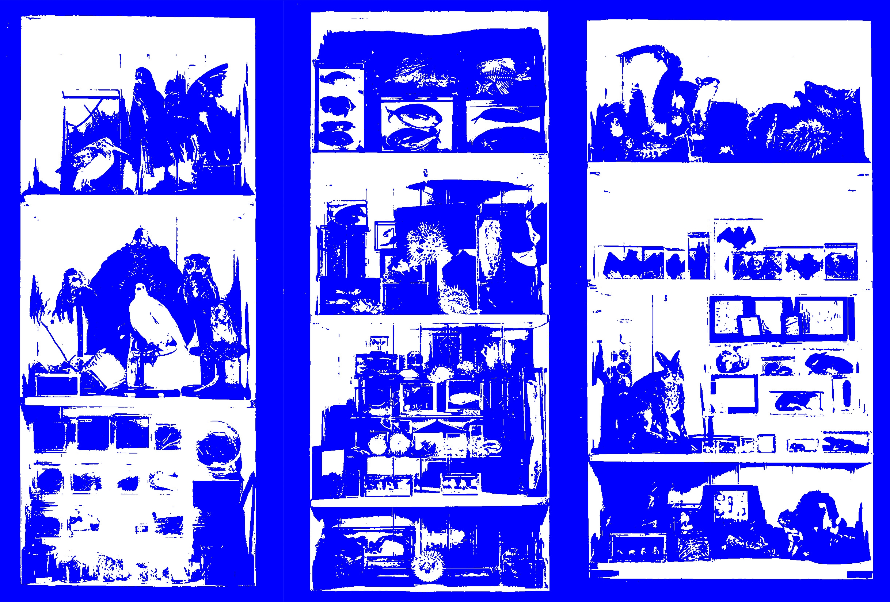

When I still lived in Providence, I would go to the Nature Lab to relax and draw. If I was ever stressed about school or was just feeling bored, the Nature Lab was a place where I could escape and unwind. Sometimes I’d spend hours there drawing, and sometimes I’d go just to look through their cabinets that were filled with all types of specimens.

It was amazing that there was so much of the natural world contained in just one small building.